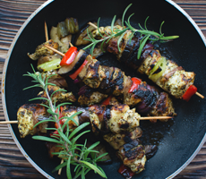

Our Story
Who we are
Frankie & Benny's is a chain of Italian-American restaurants in the United Kingdom, with numerous outlets nationwide, run by The Restaurant Group plc. The first location opened in 1995 in Leicester,but now the chain has over 200 locations across the UK.Story
In branches, on menus, and on their official website, the fictional story about the restaurant's origins is presented. The story is that in 1924, at the age of 10, Frankie left Sicily with his parents and moved to “Little Italy” in New York. Within a year of moving, the family had opened a restaurant, everybody helping with the building and the cooking in equal measure. Frankie went to the nearby high school and became lifetime friends with Benny, already a third-generation American. The business was taken over by Frankie and Benny in 1953, and combines popular American food with traditional Italian dishes.Theme
Frankie & Benny's restaurants are themed to reflect the 1950s Italian-American backstory. They are decorated in dark wood, with warm mood lighting and granite effect table tops. There are numerous artifacts in each restaurant which are in-keeping with the theme, such as old photos of Italian heritage Americans, publicity shots of musicians and sportsmen, and advertising posters from the period on both the walls and the menus. The toilets often have Italian lessons playing over the speakers, and the restaurant itself plays classic American 1950s pop, albums of which are available to purchase in-house. Staff wear simple black waistcoats, a tie, white shirt, black trousers, and a simple black apronOur Featured Dishes

Fugiant Nulian Sit 35 $
Fugiant Nulian Sit 35 $
 Fugiant Nulian Sit 35 $
Fugiant Nulian Sit 35 $
Fugiant Nulian Sit 35 $